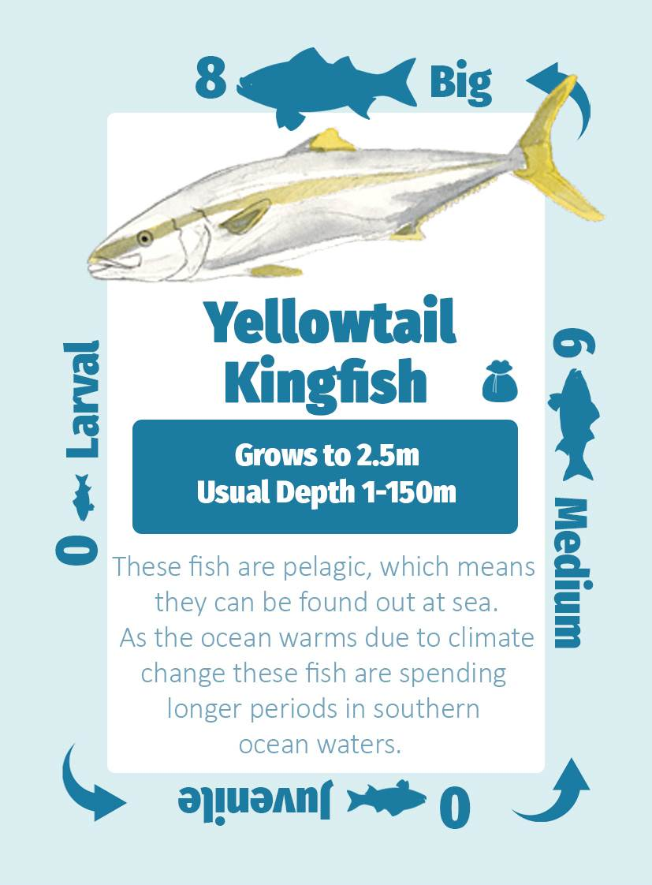

How to play
Watch this short video where Matt Testoni explains how to play the game, or jump to the relevant section below to read more.
Setup
Shuffle all fish cards and wildcards together into the gameplay deck and place in the middle of the play area. From this deck, draw cards equal to the number of players +2 and place them face-up in the middle of the play area. These are the face-up cards.
Find the “End of game” card and set it aside, then shuffle the remaining round-end cards. Remove four round-end cards and put them aside, shuffle the “End of game” card into the rest of the deck, and place the four removed cards on top. Place the round-end deck in the centre of the play area. The game will end randomly at any time after the first four rounds.

Identify a large clear space in front of each player - this will be their fishing site. Deal each player six cards. To start the game each player places up to three fish from their hand into their fishing site: one as a big fish, one as a medium fish, and one as a juvenile fish. If the player does not have three fish in their hand, they must place the bigger fish first (so they will have only one big and one medium fish, or only one big fish).
Keep track of fish size
The orientation of the fish cards in your fishing site or ice box is essential. All fish start as larval fish, then become juveniles, medium sized and then large fish. You get different number of points for catching different sized fish. Remember, in each turn a fish can only grow by one size increment. It takes a while to bring back big fish.



Gameplay
During the round each player follows these steps. Use the turn order to keep track.
DRAW new cards equal to the number of big fish you have in your fishing site, but no more than 5 cards. You can draw these cards from the face-up cards, the deck, or both. This means that you can draw unknown card from the deck or play safe and take what you see (from the face-up cards). Check to see if you have any pink wild cards in your fishing site (not in your hands) - they allow you to draw more cards.
SPAWN new fish equal to the number of big fish you have in your fishing site. This is done by placing cards from your hand into your fishing site in the larval fish orientation. Check to see if you have any red wild cards in your fishing site (not in your hands) - they allow you to spawn more fish.

Click on the image to zoom in
GROW fish to their next stage by rotating them from larval to juvenile, from juvenile to medium, or from medium to big. You can grow a fish to the next stage for every big fish present in your fishing site, i.e. if you have two big fish you may grow two smaller fish to their next stage. Fish can only grow by one stage in each turn (larval to juvenile, medium to large, etc), i.e. larval juvenile cannot become big fish in one round even if you have three big fish and can have three “growth steps”. Check to see if you have any green wild cards with a starfish in your fishing hole (not in your hands) – they allow you to grow more fish.
If you like, CATCH ONE fish from your fishing site. Catching is optional. You catch fish by placing it in your ice box in the same orientation as you caught it. Caught big fish no longer count as big fish in your fishing site. You can only catch one fish per turn, unless you have orange wild cards in your fishing site (not in your hands), such as fishing rod, scuba equipment or delicious bait. Remember, it is important to keep catching fish, because once the game ends the player who has the largest number of points from the caught fish will win. Catching big fish will give you more points, but will reduce the number of cards you can draw, the number of fish you can spawn or the number of growth steps you can have.
If you like, play ONE WILD CARD from your hand into your fishing site. Wild cards come in multiple colours that do different things. Coloured cards are played (placed) into your fishing site to give you extra abilities or improve your site. They are permanent and apply each round. Black wildcards give one-off effects and must be discarded once they are played.
Round end
Once each player has had one turn, follow the round end steps to complete the round.

Click on the image to zoom in
Reveal the top round end event card and follow its directions. If this is a round 5 or more, the round end card might also be the end of the game card.
Discard cards so no player has more than 7 cards in hand. This is rarely needed, but helps maintain the balance of the game.
Reset the face-up cards for the centre by moving them to the used card pile (face-down) and setting up new face-up cards from the pile (number of players + 2).
Rotate the first player by passing the first player card clockwise. This ensures that the first player gets the choice of new face-up cards equally.
Game end

Click on the image to zoom in
The game ends randomly, once the flipped round end card is the “End of the game” card. This should happen after the end of 5 rounds or more. Now count your points.
Making sure you keep the orientation correct for each fish in your ice box and count the points displayed next to the size of each fish in your ice box.
Each larval, juvenile and medium fish remaining in your fishing site give you 1 point. Add these points to your total score.
Each big fish remaining alive in your fishing site give you 2 points. Add these points to your total score.
The player with the most points wins!